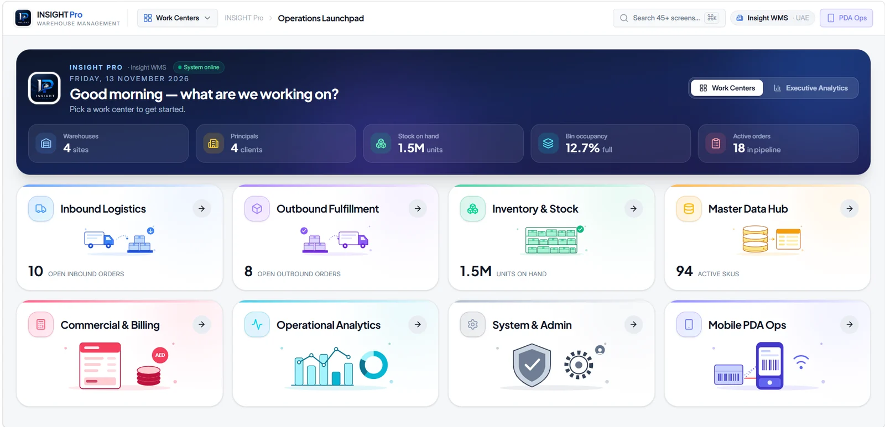
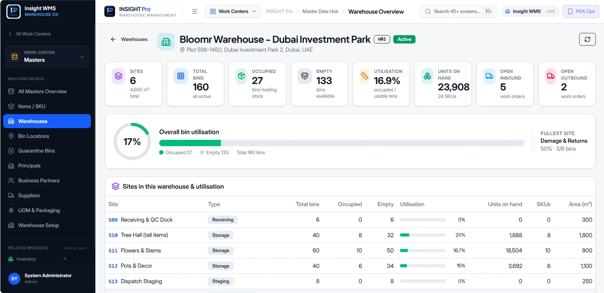
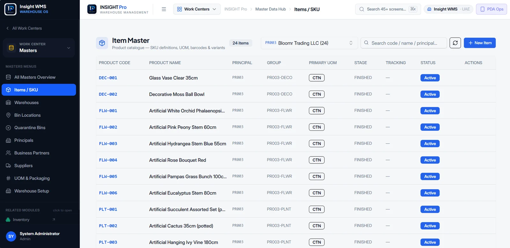
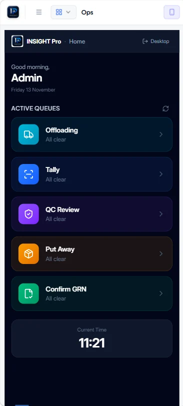

Product overview
InsightPro is one Track & Trace platform that covers the supply chain end to end. Its modules are tightly integrated and highly configurable, and it gives real-time visibility from inbound to outbound.
| Item | Detail |
|---|---|
| Vendor | Artelliq |
| Product | InsightPro WMS & SCM Suite |
| Target customers | 3PL and 4PL providers, freight forwarders, logistics operators |
| Delivery model | Custom build per customer |
| Deployment | Cloud, hosted in the UAE |
| Certification | ISO 27001 |
| Time to go-live | 2–5 months |
| Companion product | Insight FMS (freight management) |
Core modules
Key benefits claimed
- Accurate, real-time stock detail across all locations
- Centralized control of all warehouse operations on one platform
- Traceability across multiple sites and customers
- Better use of labor, equipment and warehouse space
- Automated billing and invoicing, so no payment is missed
- Fewer errors through automated workflows, and higher productivity through mobile devices
Product tour
A look at InsightPro as warehouse teams use it every day.




Architecture at a glance
The ERP sends purchase orders, ASNs and sales orders through the Data Interchange Hub. The four modules carry out the work, and receipts and shipments flow back to the ERP in real time.
Inbound and outbound processes
Both flows are scan-driven: staff use hand-held RF terminals with scanners to receive, put away, pick and pack, which raises accuracy and speed.
Inbound: receiving & put-away
- Purchase order management
- Advance Shipment Notices (ASN)
- Receiving and inspection
- Quality check and segregation
- Product labeling
- Automated put-away
- Cross-dock operations
- Workload balancing
Outbound: picking & distribution
- Sales order management
- Wave planning and picking
- Pack and ship operations
- Inventory movement
- Order fulfillment
- Multi-channel processing
- Distribution planning
- Load optimization
Picking and shipping options
Inventory control
InsightPro tracks every unit with the controls that FMCG, pharma, food and industrial operations need.
| Capability | What it covers |
|---|---|
| Traceability | Lot and batch tracking, serial number tracking, expiry dates |
| Rotation rules | FEFO (first expiry, first out) and FIFO (first in, first out) |
| Replenishment | Min-max and on-demand replenishment of pick locations |
| Stock accuracy | Cycle counting without stopping operations |
| Stock status | Quarantine, damaged and on-hold stock kept out of allocation |
| Value-added services | Kitting and bundling |
3PL and 4PL capabilities
The suite is built for third- and fourth-party logistics, where one warehouse serves many clients with separate stock, billing and SLAs.
| Capability | What it does |
|---|---|
| Multi-client management | Separate inventories, billing and SLAs per customer |
| Flexible billing | Bills storage, handling, value-added services and minimum charges, using activity-based rules |
| Rate cards | Set up per client, or grouped across clients that share the same terms |
| Client portal | Self-service portal that gives each 3PL client visibility of their own stock and orders |
| Flow-through operations | Cross-docking and direct shipping without physical storage |
| Labor management | Tracks productivity, performance metrics and resource allocation |
Key 3PL features
- Traditional warehouse management
- Flow-through and cross-dock functionality
- Order management and processing
- Quality control and inspection
- Returns management
- Location and storage management
- Labor control and task management
- Broad visibility for customers
Data capture technology
Customers can choose barcode, RFID or a hybrid of both. Artelliq states that RFID counting is 100× faster than barcode counting.
| Barcode | RFID | |
|---|---|---|
| Strengths | Cost-effective, proven reliability, easy to implement, low maintenance | 100× faster counting, no line of sight needed, bulk reading, real-time visibility |
| Best for | Item-level tracking, picking confirmation, receiving verification | High-volume operations, automated inventory counts, asset tracking |
The hybrid approach runs both together, set up to match each operation's needs.
Integrations, material handling and analytics
ERP integration. A Universal Data Interchange Hub keeps the WMS and the ERP in sync in real time. It integrates at both the logic level and the database level.
| Integration area | Supported |
|---|---|
| ERP platforms | SAP (incl. S/4HANA), Microsoft Dynamics 365, Dynamics AX, Dynamics NAV, Oracle E-Business Suite, Odoo, Zoho, Tally, Scala, Synthesis, Orion |
| Protocols | EDI, XML, flat files |
| ERP to WMS (expectations) | Purchase orders, Advance Shipment Notices, sales orders |
| WMS to ERP (results) | Receipts, shipments |
Material handling equipment and external apps
Analytics and BI
- SCM data is structured for direct use by BI tools
- Built-in custom reports and dashboards, shaped to business requirements
- Connects to the customer's existing BI tools, and Artelliq will help build dashboards on popular BI platforms
Automation and AI
Yard, labor and mobile
| Area | Capabilities |
|---|---|
| Yard (Open Yard) | Dock appointment scheduling, gate in/out control, container tracking |
| Labor | Productivity standards, performance tracking and incentive tracking |
| Mobile | Runs on Zebra, Honeywell and Android devices, with offline working |
Insight FMS (Freight Management System)
Insight FMS covers air, sea and land freight for import, export and trans-shipment, plus road transport pickup and dispatch. It gives real-time order visibility: order and pricing details, service options, proof of delivery, and shipment tracking by order number, carrier, date or customer.
Key features
- Multimodal operations (air, sea and land)
- Individual and consolidated jobs
- Intuitive user interface
- Online shipment tracking and tracing
- Multi-company, multi-location and multi-currency
- Generates the relevant shipping documents
- Better global supply chain efficiency and visibility
- Better pricing and margin analysis
Hosting and security
| Area | Detail |
|---|---|
| Deployment | Cloud |
| Hosting location | UAE-hosted infrastructure, so data stays in the country |
| Certification | ISO 27001 |
| Sign-in | Single sign-on (SSO) |
| Audit trail | Activity logs tied to each user ID |
| Backup | Automated backups configured for each deployment |
UAE readiness
Built for how UAE warehouses and 3PLs actually operate.
Implementation
A structured five-phase rollout takes most customers from kickoff to go-live in 2–5 months.
- 2–3 weeksDiscovery & solution designSite walkthroughs, process mapping and requirements. Deliverable: signed-off solution design.
- 6–12 weeksBuild & configurationCustom development, warehouse layout and rules set-up, and ERP integration. Deliverable: configured system ready for testing.
- 2–3 weeksTesting, data migration & trainingUser acceptance testing, master and opening-stock data loads, and role-based training. Deliverable: UAT sign-off and trained users.
- 1–2 weeksGo-live & cutoverPlanned cutover with on-site support for the first operating days. Deliverable: live operations.
- OngoingHypercare & supportClose post-launch monitoring and stabilisation, then continuing support. Deliverable: stable, optimised operations.
About Artelliq
Artelliq builds InsightPro WMS & SCM Suite and Insight FMS: custom-built warehouse, supply chain and freight platforms for 3PL, 4PL, forwarding and logistics operators across the UAE.
See InsightPro in action. Book a live demo tailored to your warehouse operations.